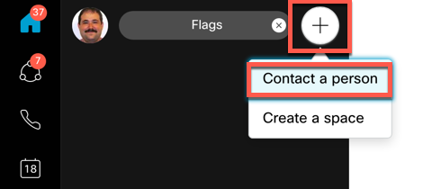
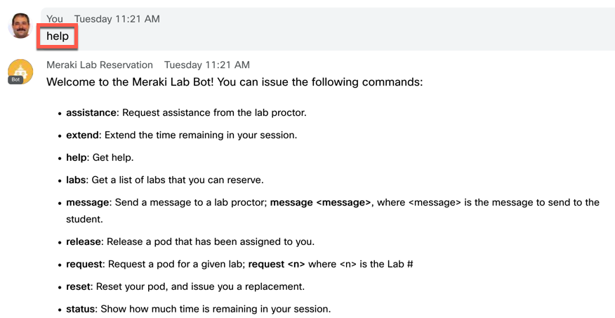

Welcome to Hybrid Meraki Integration Labs! To access our labs, you will need to utilize Webex Teams. In your Webex Teams client, follow these steps:
- In the Webex Teams client, click the Plus button (+) to create a new space. Select “Contact a Person”.

- In the search bar, enter “merakilab@webex.bot”. Select the bot in the list, and it will start a new space with the bot.
- At any point, send the message “help” to the bot, and it will give you the available commands to access and operate your lab.

- If you are ready to get started, send the message “labs” to the bot, and it will give you a list of available labs. To start your lab session, send the message “request <n>” where <n> represents the Lab # that you want to start. For example, if you wish to start the first lab in the list, send the message "request 1".